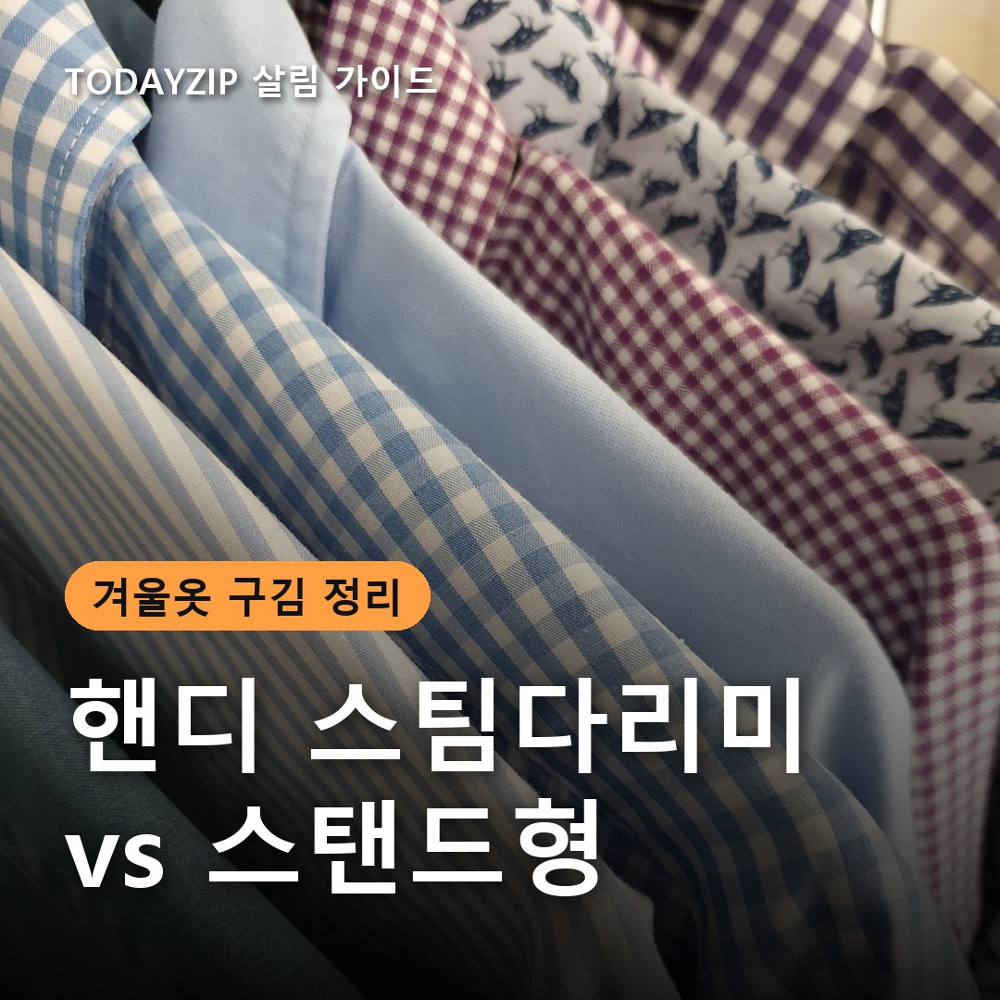
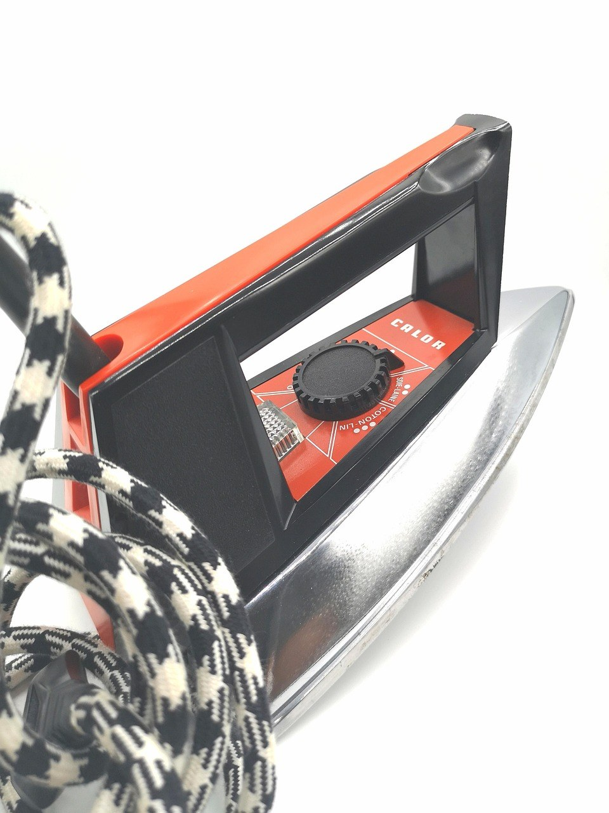
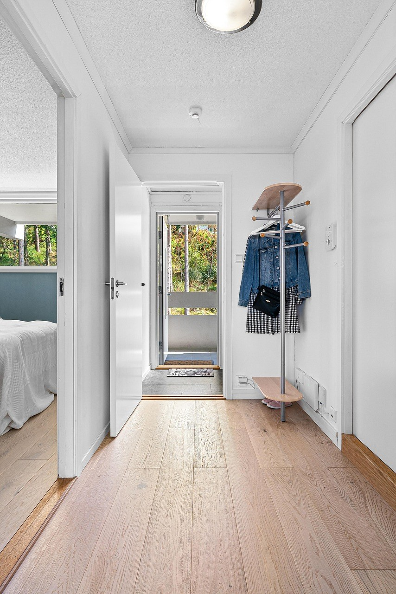
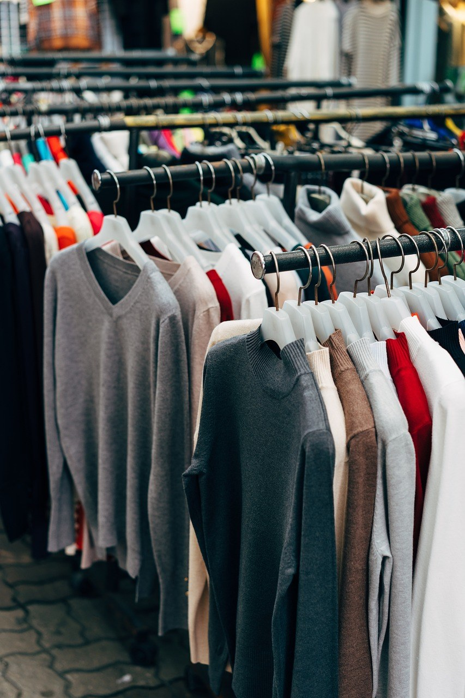

이 포스팅은 쿠팡 파트너스 활동의 일환으로, 이에 따른 일정액의 수수료를 제공받습니다.
[사진 1: 썸네일]
아침에 꺼낸 셔츠가 구겨져 있는데 다리미판을 펼 시간은 없을 때, 옷걸이에 건 채로 스팀만 쏘면 되는 핸디 스팀다리미가 눈에 들어오죠. 그런데 찾아보면 키보다 큰 스탠드형도 있고, 가격과 크기가 꽤 달라서 뭘 사야 할지 헷갈려요.
이 글에서는 핸디 스팀다리미와 스탠드형이 무엇이 다른지 표로 비교하고, 우리 집 옷과 공간에 맞게 고르는 기준을 정리해 드릴게요.
[사진 2]
둘 다 옷을 걸어 둔 채 뜨거운 증기로 구김을 펴는 방식이에요. 가장 큰 차이는 물통 크기와 놓는 자리예요. 아래 수치는 판매 중인 제품 사양에서 확인한 대략적인 범위라 제품마다 다를 수 있어요.
| 구분 | 핸디 스팀다리미 | 스탠드형 스티머 |
|---|---|---|
| 물통 | 약 0.07~0.28L로 작음 | 약 1.3~2L로 큼 |
| 소비전력 | 1,000~2,000W 제품이 많음 | 2,000W 안팎 제품이 많음 |
| 무게·자리 | 손에 드는 크기, 서랍 보관 | 본체+기둥, 바닥 자리 필요 |
| 잘 맞는 일 | 셔츠 1~2벌, 코트 부분 정리, 여행 | 여러 벌, 긴 원피스, 커튼 |
| 가격대 | 상대적으로 저렴 | 상대적으로 비쌈 |
📷 [직접 찍은 사진 넣기: 옷걸이에 건 셔츠나 코트의 구김진 부분 가까이]
원룸이나 자취방처럼 수납 자리가 좁고, 다리는 옷이 출근용 셔츠 한두 벌 정도라면 핸디 스팀다리미가 잘 맞아요. 쓰고 나서 서랍에 넣으면 끝이라 꺼내기 귀찮아서 안 쓰게 되는 일이 적어요.
다만 물통이 작아서 셔츠 두세 벌을 하면 중간에 물을 다시 채워야 할 수 있어요. 울 코트처럼 세탁이 부담스러운 옷의 구김과 눌린 자국을 가볍게 정리하는 용도로도 많이 써요.
✍️ [내 경험 한두 줄: 우리 집에서 구김 때문에 제일 자주 다리는 옷은 뭔가요? (셔츠/교복/코트/원피스)]
[사진 3]
📷 [직접 찍은 사진 넣기: 스탠드형을 둘 수 있을지 확인하려고 옷장 옆 빈 자리를 줄자로 잰 모습]
가족 셔츠를 주말에 몰아서 다리거나, 긴 원피스와 커튼까지 펴고 싶다면 물통이 큰 스탠드형이 편해요. 기둥에 옷을 걸고 두 손으로 옷을 당기며 스팀을 쏠 수 있어 넓은 면이 빨리 펴져요.
대신 본체와 기둥을 세워 둘 자리가 필요하고, 쓰고 나서 물통을 비우고 접어 두는 데 시간이 조금 더 걸려요. 사기 전에 둘 자리를 먼저 정해 두세요.
✍️ [내 경험 한두 줄: 다림질은 보통 언제, 몇 벌쯤 하나요? (출근 전 매일/주말에 몰아서)]
[사진 4]
핸디 스팀다리미든 스탠드형이든 상세 페이지에서 아래 숫자를 먼저 보세요. 연속 사용 시간은 물통 용량(mL)을 연속 스팀량(g/분)으로 나누면 대략 짐작할 수 있어요.
Q. 핸디 스팀다리미로 셔츠 칼주름도 잡히나요?
A. 옷걸이에 건 채 스팀만 쏘면 구김은 펴지지만 칼주름처럼 각을 세우기는 어려워요. 각이 필요하면 바닥판을 대고 누를 수 있는 겸용 제품이나 일반 다리미가 낫습니다.
Q. 물은 수돗물을 넣어도 되나요?
A. 제품마다 권장하는 물이 달라요. 사용설명서를 먼저 확인하고, 물때가 생기지 않게 쓰고 난 뒤 물통을 비워 두세요.
정리하면, 하루 한두 벌과 코트 구김 정리라면 핸디 스팀다리미, 여러 벌을 몰아서 다리거나 커튼까지 펼 거라면 스탠드형이 맞아요. 어느 쪽이든 물통 용량과 연속 스팀량, 둘 자리를 먼저 확인하세요.
여러분은 다림질을 언제 주로 하시나요? 구김 펴는 나만의 요령이 있다면 댓글로 알려 주세요.
인스타그램 @todayzip.info 에서 살림 꿀팁을 30초 영상으로도 볼 수 있어요.
이 포스팅은 쿠팡 파트너스 활동의 일환으로, 이에 따른 일정액의 수수료를 제공받습니다.